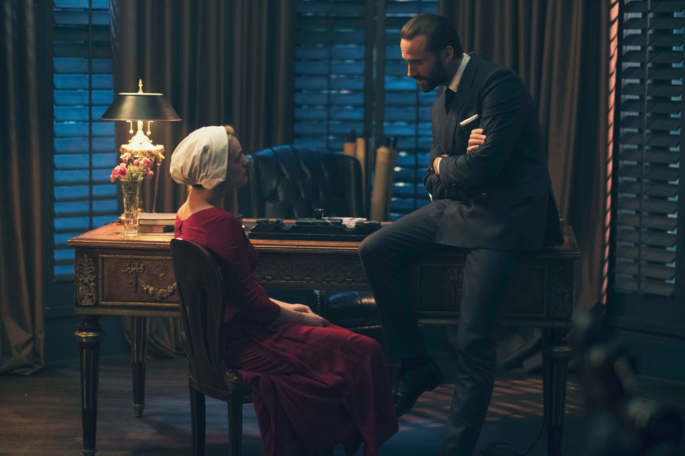

Resistencia Y Aliados
June Osborne
June - Defred - Dejoseph
June Osborne
Conocida bajo el régimen de Gilead como Defred (Offred) y posteriormente como Dejoseph (Ofjoseph), es la protagonista y narradora principal de la serie de televisión El cuento de la criada (The Handmaid's Tale).
Es interpretada por la actriz estadounidense Elisabeth Moss. Su personaje es cara de la Resistencia, y simboliza la lucha contra la opresión de la República de Gilead.
Antecedentes y captura
Antes de la instauración de la dictadura, June vivía en libertad, Junto a su esposo Luke Bankole y su hija pequeña, Hannah. A menudo visitaba a su madre Holly, una activista feminista, y a su amiga Moira.
Tras la Guerra Civil y el ascenso de los Hijos de Jacob, el nuevo régimen anuló los matrimonios de personas divorciadas. Como Luke se había divorciado de su primera esposa, su unión con June fue declarada inválida por la ley de Gilead. Debido a esto, June fue clasificada de adúltera y su hija Hannah, ilegítima.
Para escapar del nuevo sistema, la familia intentó huir a Canadá, pero fueron interceptados por las autoridades de Gilead. Hannah fue entregada como hija adoptiva a una familia gobernante del régimen, bajo el nombre de Agnes. Y June, al ser una mujer fértil, fue reclutada como Criada.
Cautiverio y asignaciones en Gilead

Hogar de los Waterford (Defred)
Es asignada al comandante Fred Waterford y su esposa Serena Joy
En esta casa es víctima de abusos sexuales ritualizados (la ceremonia) con el fin de engendrar un hijo para la pareja. En este periodo, inicia una relación íntima secreta con el chófer Nick Blaine, con quien concibe a su segunda hija, Nicole.
Hogar de los Lawrence (Dejoseph)
Más adelante es reasignada al comandante Joseph Lawrence, el arquitecto económico de Gilead.
En esta residencia, June halla un mayor margen de maniobra debido a la particular naturaleza de su amo, quien colabora de manera intermitente con el movimiento de resistencia Mayday.
Momentos decisivos
Hitos de la resistencia de June
Sus decisiones dejan de estar ligadas únicamente a la supervivencia y comienzan a cambiar el destino de otras personas sometidas por Gilead.
-
01
La huida de Nicole
June facilita la salida de su bebé hacia Canadá para evitar que crezca bajo las reglas del régimen.
-
02
El vuelo de los ángeles
Organiza la evacuación de más de 80 niños de Gilead. Rita logra escapar junto a ellos y llegar a Canadá.
-
03
La caída de Waterford
Junto a otras criadas fugitivas, participa en la ejecución del comandante Fred Waterford en la frontera.